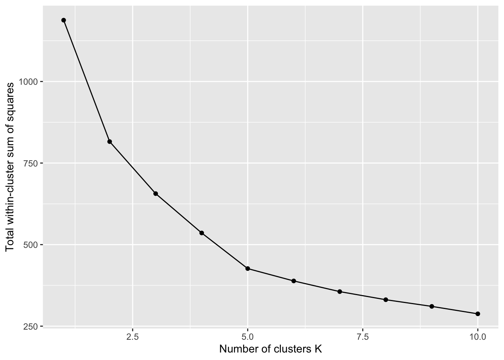

# Pivotting to Wider To have Numeric Values in Cells (split items)
food_wide <- food_security |>
filter(Year_End == 2020, Item %in% c("Average dietary energy supply adequacy (percent) (3-year average)", "Share of dietary energy supply derived from cereals, roots and tubers (percent) (3-year average)", "Gross domestic product per capita, PPP, (constant 2021 international $)", "Value of food imports in total merchandise exports (percent) (3-year average)","Per capita food supply variability (kcal/cap/day)", "Prevalence of obesity in the adult population (18 years and older) (percent)" )) |>
select(Area, Item, Value) |>
pivot_wider(names_from = Item, values_from = Value) |>
drop_na()
# Standardising/Normalising Data
food_scaled <- food_wide |>
mutate(across(where(is.numeric), scale))K-Means Clustering Food Security
K-Means Clustering
This is an unsupervised machine learning algorithm that partitions a dataset into a pre-determined number of non-overlapping subgroups by iteratively assigning each data point to the nearest cluster centre and then re-calculating the centroids based on the mean of the points in the cluster. The goal is to group data points such that those within the same cluster are as similar as possible, while those in different clusters are as different as possible, minimisig within-cluster sum of squared errors.
Procedure
- Choose the number of clusters (\(k\))
- Randomly assign initial cluster centres.
- Assign each data point to the nearest centroid.
- Update centroids to be the mean of their assigned points
- Repeat 3 and 4 until assignments stop changing.
How do we choose the number of clusters?
Optimal \(k\) is where adding more clusters doesn’t significantly improve how well the data is grouped. Strikes the balance between underfitting and and overfitting
By using the Elbow Method!
- Run k-means clustering for a range of \(k\) values (ex. 1-10)
- For each \(k\), calculate the Within-Cluster Sum of Squares (WCSS). This value is the measure of how close the data points in a cluster are to the cluster’s centroid. Lower WCSS imply tighter more cohesive clusters.
- Plot \(k\) vs WCSS
- Look for the ‘elbow’
As \(k\) increases, WCSS should decrease with the clusters getting tighter, but after a certain point, the improvement slows down. The ‘elbow’ is where the rate of decrease sharply changes. This is usually the optimal \(k\).
Goal Find countries with similar food security profiles.
# iterate from 1 - 10 groups. Tot withins pulls the wss for the different groups.
wss_df <- tibble(k = 1:10) |>
mutate(wss = map_dbl(k,
~kmeans(food_scaled |> select(-Area),
centers = .x,
nstart = 25)$tot.withinss))
ggplot(wss_df, aes(k, wss)) +
geom_line() +
geom_point() +
labs(x = "Number of clusters K", y = "Total within-cluster sum of squares")
Important
Looks like we stop getting much improvement around \(k=5\) clusters. We will keep this as the number of clusters for our algorithm to fit.
# Letting the library do all the work
k_best <- 5
kmeans_fit <- kmeans(food_scaled %>% select(-Area), centers = k_best, nstart = 25)
# Merging back to og set so we can plot
food_clustered <- broom::augment(kmeans_fit, food_scaled) |> mutate(.cluster = as.factor(.cluster))
food_original_clustered <- food_wide |>
filter(Area %in% food_clustered$Area) |>
mutate(.cluster = food_clustered$.cluster)Scatter plot Matrix of our Clusters using Plotly
Using the following inspiration.
# Define discrete colors for each cluster
cluster_colors <- c("#469990", "#FA8072", "#B0C4DE", "#ffd8b1", "#dcbeff")
# Create empty plot
p <- plot_ly()
# separate trace for each cluster
for(i in 1:k_best) {
cluster_data <- food_original_clustered |> filter(.cluster == i)
p <- p |>
add_trace(
data = cluster_data,
type = 'splom',
dimensions = list(
list(label = 'Energy Adequacy (%)',
values = ~`Average dietary energy supply adequacy (percent) (3-year average)`),
list(label = 'Cereal Share (%)',
values = ~`Share of dietary energy supply derived from cereals, roots and tubers (percent) (3-year average)`),
list(label = 'GDP per Capita ($)',
values = ~`Gross domestic product per capita, PPP, (constant 2021 international $)`),
list(label = 'Food Imports (%)',
values = ~`Value of food imports in total merchandise exports (percent) (3-year average)`),
list(label = 'Supply Variability (kcal)',
values = ~`Per capita food supply variability (kcal/cap/day)`),
list(label = 'Obesity (%)',
values = ~`Prevalence of obesity in the adult population (18 years and older) (percent)`)
),
text = ~Area,
name = paste("Cluster", i),
marker = list(
color = cluster_colors[i],
size = 7,
line = list(color = 'white', width = 0.5)
),
showlegend = TRUE
)
}
p <- p |>
layout(
title = list(
text = "Food Security K-Means Clustering (k=5)",
font = list(size = 7)
),
dragmode = 'select',
hovermode = 'closest',
# Make axes text smaller and rotated for readability
xaxis = list(
tickangle = 30,
tickfont = list(size = 9),
titlefont = list(size = 11)
),
yaxis = list(
tickfont = list(size = 9),
titlefont = list(size = 11)
),
# Margins and spacing
margin = list(l = 70, r = 40, b = 70, t = 80),
font = list(size = 7)
)
pInteractive Tools In This Plot
- You can double click on the cluster label on the right to isolate a trace, better visualise a cluster
- You can hover on top of the points to see what area each value pertains to.
- You can drag and select to highlight specific points of interest in any of these plots.
- You can select and drag the axes labels for each individual plot to “scroll” to different areas of the plot.
About our data
Following the recommendation of experts gathered in the Committee on World Food Security (CFS) Round Table on hunger measurement, hosted at FAO headquarters in September 2011, an initial set of indicators aiming to capture various aspects of food insecurity is presented here. The choice of the indicators has been informed by expert judgment and the availability of data with sufficient coverage to enable comparisons across regions and over time.
food_security.csv
| variable | class | description |
|---|---|---|
Year_Start |
integer | First year of this observation. |
Year_End |
integer | Final year of this observation. |
Area |
character | Country or region in which the observation took place. |
Item |
character | The specific indicator of food security. |
Unit |
character | Unit of the measurement. One of “g/cap/d” (Grams per capita per day), “Int $/cap” (International Dollar per capita), “kcal/cap/d” (Kilocalories per capita per day), “km” (Kilometers), “million No” (million Number), “No” (Number), “%” (Percent), “1000 Int /cap” (thousand International Dollar per capita), or “index”. |
Value |
double | The numeric value of the measurement. Note: values of “0.09”, “0.49”, and “2.49” were “<0.1”, “<0.5”, and “<2.5” (respectively) in the original dataset. |
CI_Lower |
double | The lower bound of the confidence interval of the measurement. Note: values of “0.09” and “0.49” were “<0.1” and “<0.5” (respectively) in the original dataset. |
CI_Upper |
double | The upper bound of the confidence interval of the measurement. Note: values of “0.09” and “0.49” were “<0.1” and “<0.5” (respectively) in the original dataset. |
Flag |
character | Additional information about the measurement. One of “Estimated value”, “Figure from external organization”, “Missing value”, “Missing value; suppressed”, or “Official figure” |
Note |
character | Additional details about this measurement (mostly NA). |